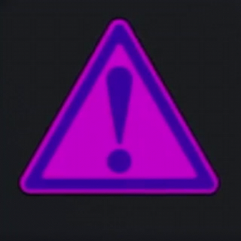

На сервере запрещено:
1 - Злоупотребление нецензурной лексикой;
2 - Любые оскорбления/провокации, в том числе разжигающие конфликты на межнациональной почве;
3 - Спам и флуд;
4 - Любые виды рекламы;
5 - Обмен/передача/продажа аккаунтов;
6 - Шок контент, контент 18+;
7 - Любые политические упоминания, высказывания;
8 - Запрещено любое обсуждение военных действий, провокация подобных диалогов и размещение любой информации по данной теме.
На сервере запрещено:
#Список возможных ограничений:
#Блокировка (временная/перманентная) в игре или на форуме
#Блокировка чата (временная/перманентная) в игре
#Обнуление игрового аккаунта
#Другие ограничения
-Администраторы проекта и разработчики обладают исключительными правами, имеют право на полное или частичное не соблюдение правил игры и могут действовать на свое усмотрение в любой ситуации. На иных представителей администрации распространяются правила проекта и внутренние правила.
-Администраторы и модераторы оставляют за собой право устанавливать сроки наказаний, отличающиеся от приведенных в правилах.
-Администрация оставляет за собой право отказать в помощи, если ваш вопрос/просьба сформулирован некорректно или невнятно.

На сервере запрещено: —
1. ОБЩИЕ ПОЛОЖЕНИЯ
1.1 Регистрируясь на проекте, Вы подтверждаете свое согласие с данными правилами.
1.2 Незнание правил не освобождает Вас от ответственности.
1.3 Администрация имеет право в любое время вносить поправки в данные правила.
1.4 Администрация не обязана возвращать игровые ресурсы, утраченные в результате багов, ошибок, откатов и прочих непредвиденных случаев.
1.5 Владельцем аккаунта считается человек, зарегистрировавший аккаунт на сервере.
1.6 Не допускается передача или продажа аккаунта кому-либо.
1.7 Вы обязаны хранить данные Вашего аккаунта в тайне. Безопасность аккаунта лежит полностью на Вас.
1.8 Администрация не возмещает ущерб, нанесенный пользователями, частично или полностью получившими доступ к Вашему аккаунту.
1.9 Ответственность за действия с Вашего аккаунта, совершенные третьими лицами, лежит на вас.
1.10 Администрация проекта оставляет за собой право в любой момент отказать Вам в пользовании проектом.

На сервере запрещено: —
2. ИГРОВОЙ ПРОЦЕСС
2.1.1 Запрещена неактивность более 5 минут и недопустима более двух раз подряд в командных битвах.
Наказание:Кик.*
2.1.2 Пассивное игровое поведение — пользователю категорически запрещается проявлять полное или частичное «пассивное» поведение. Под этим поведением подразумевается поведение пользователя не соответствующее правилам игровых режимов (помеха команде, занятие места в битве, взятие кристальных ящиков без участия в основном этапе игрового режима).
Наказание:
Кик, блокировка аккаунта от 1 часа до 1 суток за первое нарушение.*
2.1.3 Запрещены действия, направленные на создание помех команде, за которую сражается пользователь в командных режимах (саботаж). Под помехой в том числе понимается: сражение против своей команды, умышленный выбор слабого вооружения, частые паузы, имитация проблем с интернет-соединением, сражение в интересах команды противника (сговор), нахождение в битве с нескольких аккаунтов*, намеренное игнорирование противников, союзы и т.п.
Мультоводство(мультиаккаунтинг) — запрещено одновременное нахождение нескольких аккаунтов одного игрока в одной или различных битвах. (относится ко всем игровым режимам, исключение — «Паркур»)
Наказание:
Кик, блокировка аккаунта от 1 часа до 1 суток за первое нарушение.*
2.1.4 Запрещена прокачка. Под прокачкой в том числе понимается: сговор, ведущий к значительному перевесу сил в пользу одной из команд в командных режимах; сражение между аккаунтами одного пользователя; сражение с игроками, которые собирают кристаллы и не бьют в ответ;
Наказание:
Кик, блокировка аккаунта от 1 часа до 1 суток за первое нарушение, возможна блокировка второго аккаунта.*
2.1.5 Запрещено использование багов, ошибок, недочетов и недоработок игры и сайта. O найденных багах следует сообщить администрации проекта.
Наказание:
штраф от всех игровых достижений (от 10%) и/или блокировка аккаунта*.
2.1.6 Запрещено использование и распространение программного обеспечения, предоставляющего преимущества перед другими игроками: читы, программы для автоматизации игрового процесса (в том числе боты, программы-кликеры, макросы управления клавиатурой и мышью)
Запрещено перехватывать данные игры, изменять их и осуществлять любые другие действия, не предусмотренные внутриигровым функционалом.
Наказание:
Блокировка аккаунта, возможна блокировка по IP
2.1.7 Запрещено обманывать игроков с целью собственного обогащения. Запрещены любые мошеннические действия, направленные на угон/кражу/взлом игровых аккаунтов других Пользователей Игры.
Наказание:
Блокировка аккаунта от 1 часа до 1 недели за первое нарушение*.
2.1.8 Запрещены действия, направленные на получение пароля, иных данных аккаунта или иной личной информации любого другого пользователя, в том числе в форме вымогательства с применением угроз морального, физического или технического воздействия
Наказание:
Блокировка аккаунта от 1 часа до 1 суток за первое нарушение*.
2.1.9 Запрещено каким-либо способом мешать игрокам заниматься паркуром (целенаправленно убивать, толкать, переворачивать и мешать минами и тд.) на специальной карте с названием "Rank+ | No kill | Паркур" с расширенными ранглимитами. Правило не относится к такой же карте с названием "Rank+ | No restrictions | Паркур".
Наказание:
Кик. После третьего нарушения блокировка аккаунта от 5 минут.
На сервере запрещено: —
3. ОБЩЕНИЕ**
3.1.1 Запрещены любого рода оскорбления в отношении других Пользователей Игры, Администрации, помощников проекта, иных лиц;
Наказание:
Блокировка чата от 5 минут до 1 суток за первое нарушение*.
3.1.2 Запрещено размещение информации или символики, оскорбляющей или унижающей чувства верующих, ведущей к разжиганию ненависти, вражды, расовой, межнациональной или этнической розни, нетерпимости (включая оскорбления и прозвища, основанные на расовом, национальном, этническом, религиозном признаках), а также провоцирование собеседника на указанные действия;
Наказание:
Блокировка чата от 7 суток, возможна блокировка аккаунта*.
3.1.3 Запрещено использование нецензурной брани (мата), ненормативной лексики, иных бранных или грубых слов (выражений), не относящихся к нецензурной брани, в т.ч. в завуалированном виде;
Наказание:
Блокировка чата от 5 минут до 1 суток за первое нарушение*.
3.1.4 Запрещен флуд, флейм, спам, повтор системных сообщений, а также недопустима печать заглавными буквами (CAPS LOCK);
Наказание:
Блокировка чата от 5 минут до 1 суток за первое нарушение*
3.1.5 Запрещено попрошайничество в любой форме, в том числе просьбы о переводах денежных средств, о передаче игровых ценностей, кристаллов у Администрации проекта и иных лиц;
Наказание:
Блокировка чата от 5 минут до суток за первое нарушение*.
3.1.6 Запрещено навязчивое обсуждение действий и/или бездействий Администрации проекта и её помощников.
Наказание:
Блокировка чата от 5 минут до суток за первое нарушение*.
3.1.7 Запрещено распространение любой личной информации сотрудников Администрации, помощников проекта и третьих лиц, в том числе домашних адресов, номеров телефонов, паспортных данных. (если такая информация не является общедоступной)
Наказание:
Блокировка чата от 5 минут до суток за первое нарушение*.
3.1.8 Запрещено распространение любой ложной информации об игре, Администрации проекта, Пользователях и иных лицах (клевета).
Наказание:
Блокировка чата от 1 часа, возможна блокировка аккаунта.
3.1.9 Угрозы в отношении Пользователей, Администрации либо иных лиц.
Наказание:
Блокировка чата от 5 минут до 1 суток за первое нарушение*.
3.2.0 Запрещены любые формы дискриминации по половому, возрастному, религиозному, иным признакам;
Наказание:
Блокировка чата от 1 часа до суток за первое нарушение*.
3.2.1 Запрещено размещение информации о способах совершения самоубийства, призывы к совершению самоубийства, насилия, иных действий, представляющих угрозу жизни или здоровью.
Наказание:
Блокировка чата от 1 часа до 1 суток за первое нарушение*.
3.2.2 Строго запрещено вести диалоги на политические темы, навязывать свои политические взгляды, объяснять политическую ситуацию, провоцировать разговоры на политические или близкие к таковым темы. Запрещено любое обсуждение военных действий, провокация подобных диалогов и размещение любой информации по данной теме.
Наказание:
Блокировка чата от 1 дня до 1 недели за первое нарушение*.
На сервере запрещено: —
4. ПРОЧЕЕ
4.1.1 Запрещена любая попытка выдать себя за бывшего или действующего сотрудника Администрации или помощника проекта (модератора, редактора и пр.), в том числе рассылка сообщений от имени Администрации или модераторов;
Наказание:
Блокировка чата от 5 минут до 1 суток, возможна блокировка аккаунта.
4.1.2 Запрещено создавать бои с неприемлемыми названиями. Названия битв не должны носить оскорбительный характер, включать ненормативную лексику, в том числе в завуалированной форме.
Наказание:
Блокировка чата от 1 часа,* возможна блокировка аккаунта.
4.1.3 Никнейм (игровой логин) должен соответствовать следующим стандартам:
— не должен носить оскорбительный характер;
— не должен иметь визуального сходства с никами действующих и бывших работников Администрации, помощников проекта.
Наказание:
Блокировка аккаунта, с возможностью смены ника через службу поддержки.
4.1.4 Запрещено использование нескольких аккаунтов с целью обхода бана, блокировки чата и обхода иных ограничения для одного игрока.
Наказание:
Блокировка аккаунта, возможна блокировка по IP.
4.1.5 Запрещена реклама сторонних ресурсов.
Наказание:
Блокировка чата от 1 часа до суток, возможна блокировка аккаунта.
4.1.6 Запрещено размещение материалов порнографического и эротического характера или ссылок на них.
Наказание:
Блокировка чата от 1 часа, возможна блокировка аккаунта.
4.1.7 Запрещена прямая или косвенная пропаганда наркотических веществ и алкоголя.
Наказание:
Блокировка чата от 1 суток, возможна блокировка аккаунта.
4.1.8 Распространение любой конфиденциальной информации об игре и планах по её развитию.
Наказание:
Блокировка аккаунта.
4.1.9 Запрещены действия, целью которых является получение доступа к конфиденциальным данным пользователей — логинам и паролям (фишинг).
Наказание:
Перманентная блокировка чата, возможна блокировка аккаунта.
4.2.0 Запрещено размещение ссылок на сторонние ресурсы, замаскированные под официальные ресурсы Игры;
Наказание:
Перманентная блокировка чата, возможна блокировка аккаунта.
4.2.1 Запрещено размещение ссылок на сайты/хостинги, содержащие стороннее ПО (читы, программы, клиенты и т.д.), распространение ссылок на сайты, содержащие ПО, изменяющее игровой функционал, или рекламируемые как таковые;
Наказание:
Перманентная блокировка чата, возможна блокировка аккаунта.
4.2.2 Запрещены иные случаи мошенничества, направленные на массовую кражу аккаунтов.
Наказание:
Перманентная блокировка чата, возможна блокировка аккаунта.
4.2.3 Возврат денежных средств за приобретённые в игре услуги возможен только при возникновении программных ошибок в процессе выдачи услуг. В иных случаях, осуществлённый в обход функциональности игры или игрового сайта возврат считается мошенничеством.
Наказание:
Блокировка аккаунта.
ПРИМЕЧАНИЯ
* При повторных нарушениях этих пунктов правил срок наказания увеличивается за каждое последующее нарушение.
** Наказание за нарушение любого пункта этого раздела правил может быть однократно заменено на предупреждение (на усмотрение модератора).
*** Карма - список нарушений, совершённых на Вашем аккаунте ранее. Каждое Ваше нарушение чата и/или игры сохраняется в Вашу личную карму. При выдаче наказания, прежде всего идёт оценка Вашей кармы, при запущенности кармы, наказание может сильно отличаться минимального срока.
Срок давности = 1 неделя
Срок давности нарушения - это период времени, на протяжении которого игрок, совершивший нарушение, может быть привлечен к наказанию.
Если вы видите, что кто-то нарушает правила, вы, посредством персонального сообщения в дискорде, можете уведомить об этом любого из активных модераторов (список активности можно увидеть внизу по роли @game moderator. В персональном сообщении модератору необходимо четко указать суть нарушения и обязательно приложить скриншот чата, где четко видно нарушение.
— Администрация управляет Игрой исключительно по своему усмотрению, однако прислушивается к мнению сообщества.
— Использование сервисов Игры производится Игроком (пользователем) самостоятельно и по принципу «как-есть», то есть администрация игры ни при каких обстоятельствах не отвечает перед Игроком за любой прямой и/или косвенный ущерб, которые может понести Игрок в связи с получением сервиса игры или невозможностью такой сервис получить.
— Правила постепенно дополняются и обновляются.
— Настоящие правила могут быть изменены Администрацией игры без какого-либо предварительного уведомления. Игрок обязуется проверять данные правила на предмет изменений не менее чем один раз в семь дней (то есть еженедельно). В случае, если такой проверки не будет произведено в указанные сроки, а Игрок продолжает пользоваться сервисом игры, то считается, что Игрок ознакомлен и согласен с данными Правилами в их изменённой за это время редакции.
— С уважением, команда ClassicTanks.